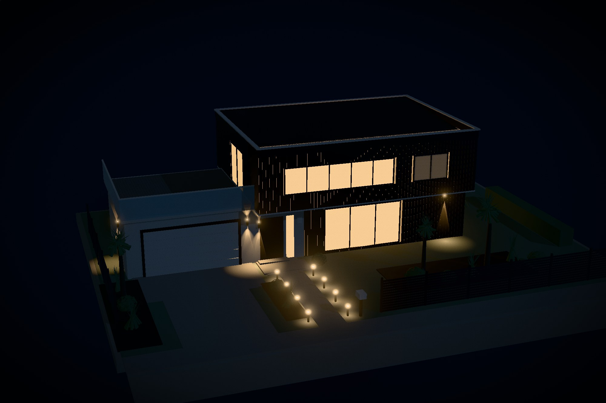

A sandbox model of a two-storey house of the kind going up here now: two black board-clad volumes
under a flat roof, a terrace over the garage, a front door beside it, and a little garden. Nothing
about it is remarkable, which is exactly why it has to be right — a house reads as being from
somewhere through details nobody photographs.
Type
Concept · self-directed
Discipline
Real-time 3D · Web
Scale
1:100, one unit per metre
Payload
No models, no textures
The brief
A presentation model of a common New Zealand house: two storeys, black and white, a small garden.
The studies before it had subjects that carry themselves — a mineral specimen, a watch movement, a
planet. A suburban house has no such help. If the proportions or the details are wrong it does not
look stylised, it looks foreign.
Design decisions
The details that place it
Vertical shiplap stained black, dark joinery, long-run steel out of sight behind a parapet,
a horizontal slat fence, a letterbox on the boundary. Take any one away and the house
drifts somewhere else; together they are unmistakable.
Shadow gaps, not textures
Cladding is built as boards with a gap between them, because what you actually read at a
distance is the shadow line, not the timber. Openings are cut by splitting each board
column into the runs the windows leave.
A model, not a render
It sits on a board with a chamfered edge, the planting is abstracted to what a model maker
would cut, and the sun moves on a slider — because the first thing anyone does to an
architectural model is turn it to the light.
How it is built
One unit is one metre and everything is set out from the street: footpath, kerb, driveway crossing,
then the house at its setback. Each volume is a dark core with cladding hung on its four faces, so
the windows are holes in the boards rather than decals on them. The upper box is wider and deeper
than the lower one, which is the whole trick: it oversails the entrance front by 950 mm and
reaches sideways to roof the entry.
The flat roof is not flat: long-run steel at three degrees to an internal gutter, hidden behind a
420 mm parapet with a white capping, which is how a flat roof is actually built here. The
corrugate is real geometry — a cosine across the sheet — and the terrace and deck use the same
board builder as the walls, laid flat.
The planting is two plants and a shrub: a cabbage tree is a bare trunk forking into tufts of
blades, flax is a fan springing from the ground, and everything else is a clipped ball. Between
them they do more to say New Zealand than the house does.
What the first scheme got wrong
It was drawn as the gabled archetype: a pitched corrugate roof, long eaves, white reveals around
every window. Every one of those details is correct for a house here — and together they read as
heritage rather than as new, because that is what the same section got built as for eighty years.
The rebuild keeps the local half and changes the form: rectilinear volumes, a flat roof behind a
parapet, dark joinery instead of white, a cantilever where the verandah used to be, a front door
beside the garage, and a terrace on the garage roof. The cladding, the fence, the planting and the
way it sits on its section did not have to change at all — which is the point. What places a house
is not its roof pitch.
After dark
A house is designed for two conditions, so the model shows both. The button switches it to
evening: up-and-down washers on the entry, the garage wall and the front of the black volume,
bollards down both sides of the path, and the rooms lit from inside — with a couple of them left
off, because a house with every light on reads as a showroom.
The beams and the pools of light on the ground are geometry, not lights: cones and discs with an
additive falloff. Only the wall washers and one room light are real. A dozen shadowless point
lights would cost more than they show at this scale, and the eye reads the pool on the path far
more readily than it reads the physics that made it.

Paving follows the buildings
When the house was rebuilt it moved three metres west, and the driveway, the path and the side
fence stayed where they were: the crossing pointed at lawn, the path stopped short of the street,
and the boundary fence ran straight through the garage door. They were numbers typed in beside the
buildings rather than derived from them.
So the plan is now declared once — house, garage, entry — and every piece of paving is set out from
it: the apron is the width of the garage door and starts at its face, the crossing runs from the
apron to the kerb, and the path runs from the front step to the footpath. Move the house again and
they all follow.
What went wrong first
The cladding builder works from the base of a wall upward, and the skins were then placed at
mid-height — so every wall rose half a storey above its own roof, and the model read as an open
box with windows floating in the sky. It took a diagnostic render with the roof coloured red to see
it: the roof had been right all along.
Outcome
A section you can walk around in daylight or after dark: eighteen named parts, a sun on a slider,
a terrace over the garage, and a house that anyone who has driven through a new subdivision here
would recognise without being told where it is.